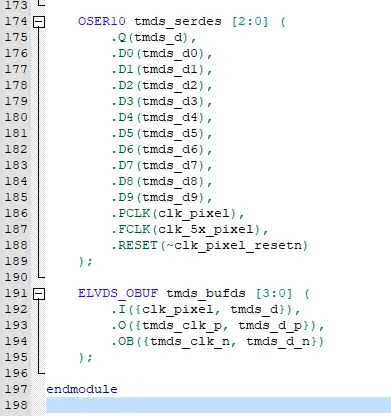
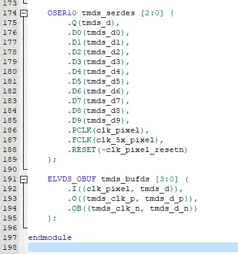

最終更新：2025-02-10,2025-05-24(html-archive)
HDMI出力 by FPGA 第2回
投稿：2024-06-27
更新：2025-01-30,2025-05-24(html-archive)
更新：2025-01-30,2025-05-24(html-archive)
単色でのHDMI出力を求め，ソースコードを辿る．
\n 今必要なのはピクセルクロックの行先と差動信号のそれである．
\n PLLでクロックを生成し，データと共にsvo_tmds.vのELVDS_OBUFモジュールに接続していた．LVDSから察するに，出力のシリアルデータをここで差動信号にしているのだろう．
\n Gowin FPGA Primitiveの6ページを参照するとまさにそのとおりである．便利なものがあるもんですね．
\n ちなみに，LVDSに接続するシリアルデータはその直上のOSER10で行っているようだ．これも36ページを参照すると，10bitのパラレル信号をシリアライズするものだそう．便利なものがあるもんですね．
\n 今必要なのはピクセルクロックの行先と差動信号のそれである．
\n PLLでクロックを生成し，データと共にsvo_tmds.vのELVDS_OBUFモジュールに接続していた．LVDSから察するに，出力のシリアルデータをここで差動信号にしているのだろう．
\n Gowin FPGA Primitiveの6ページを参照するとまさにそのとおりである．便利なものがあるもんですね．
\n ちなみに，LVDSに接続するシリアルデータはその直上のOSER10で行っているようだ．これも36ページを参照すると，10bitのパラレル信号をシリアライズするものだそう．便利なものがあるもんですね．